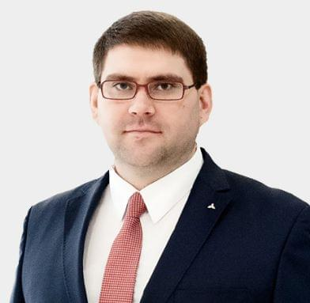

Наша команда состоит из высококвалифицированных специалистов. Нами движут ответственность, энтузиазм, вдохновение и особое отношение ко всему, что мы делаем.
Оксана Юрьевна Карахова, Генеральный директор ООО «Тракс Восток Рус».
Окончила Камский политехнический институт по специальности «Автоматизация технологических процессов и производств».
Свою карьеру Оксана Юрьевна начинала в российских компаниях по производству бронетехники. Имеет 20 лет опыта работы в финансовой сфере в крупных российских и международных компаниях. В период с 2006 по 2009 годы Оксана Юрьевна Карахова возглавляла финансово- экономический департамент совместного российско-американского предприятия «КамминзКАМА», ведущего производителя двигателей.
Оксана Юрьевна пришла в компанию ООО «Тракс Восток Рус» (ранее «ДАЙМЛКР КАМАЗ РУС») в декабре 2009 года на позицию Финансового Директора (CFO). За время работы Оксана Юрьевна Карахова с нуля выстроила все основные бизнес-процессы в компании, возглавила проекты по присоединению, слиянию и поглощению. С 18 сентября 2018 года также возглавила департамент FUSO в части продаж и послепродажного обслуживания, продукта и маркетинга. В апреле 2022 года Оксана Юрьевна была назначена на должность Генерального директора «Тракс Восток Рус».

Андрей Рогов
Директор по продажам и послепродажному обслуживанию среднетоннажных грузовых а/м
по образованию инженер окончил Московский институт стали и сплавов в 1991 году по специальности «Металлообработка».
В 2006 г.
получил второе высшее экономическое образование по специальности «Бизнес-администрирование» в Казанском институте экономики и финансов, обучался маркетингу в Московском институте народного хозяйства имени Плеханова
Герман Гильфанов, директор по продажам грузовых автомобилей Mercedes-Benz, инженер по образованию, окончил Московский институт стали и сплавов в 1991 году по специальности «Металлообработка». В 2006 году получил второе высшее экономическое образование по специальности «Бизнес-администрирование» в Казанском институте экономики и финансов, обучался маркетингу в Московском институте народного хозяйства имени Плеханова.
В автомобильной промышленности он с 2007 года, работать начинал в ОАО «КАМАЗ». С 2012 года стал генеральным директором ОАО «Торгово-Финансовая Компания КАМАЗ», где в зону его ответственности входили продажи грузовых автомобилей на российском рынке.
В компанию «Тракс Восток Рус» (ранее «ДАЙМЛЕР КАМАЗ РУС») Герман Гильфанов пришел в марте 2015 года. В настоящий момент является директором по продажам грузовых автомобилей Mercedes-Benz и также руководит направлением производственных закупок компании.
Ильнур Каюмов, директор по автосборочному производству ООО «Тракс Восток Рус».
в 1999 г.
окончил Камский Политехнический институт по специальности «Двигатели внутреннего сгорания».
Трудовую карьеру начал в Научно-техническом центре ПАО «КАМАЗ» в качестве инженера-конструктора по автомобилям. С 2005 года в ЗАО ВТК «КАМАЗ», где занимался организацией сервисного и технического обслуживания автотехники КАМАЗ, поставленной на экспорт. В компании ООО «Тракс Восток Рус» с 2012 года; начал свой путь в компании с главного технолога. В настоящее время Ильнур Каюмов является директором по автосборочному производству.
Евгений Александрович Кашин, директор по производству завода каркасов кабин ООО «Тракс Восток Рус», по образованию инженер.
в 1997 г.
окончил Камский автомеханический техникум г. Набережные Челны по специальности «Автомобиле-и тракторостроение». В 2002 году получил высшее образование в Камском государственном политехническом институте г. Набережные Челны по специальности «Автомобилестроение».
В автомобильной промышленности с 2002 года. Свою трудовую деятельность он начал на ПАО «КАМАЗ ПРЗ» со слесаря-ремонтника. Благодаря своему стремлению к лучшим результатам и саморазвитию карьера Евгения стремительно шла в гору. Так в 2019 году он был назначен на должность заместитель директора завода по производству.
В «Тракс Восток Рус» Евгений Кашин пришел в апреле 2020 года, став директором завода по производству каркасов кабин, и занимает эту должность по настоящее время.
Награды:
- 2010 год - награждён Почётной грамотой Министерства промышленности и торговли Республики Татарстан.
- 2012 год - награждён Благодарностью ОАО «КАМАЗ» в честь Дня качества.
- 2013 год – объявлена Благодарность ОАО «КАМАЗ» за достижение высоких производственных показателей.
- 2015 год – вручено благодарственное письмо ОАО «КАМАЗ ПРЗ» в конкурсе «Лидер PSK».
- 2015 год – присвоено звание «Лучший менеджер по качеству».
- 2015 год – награждён Почетной грамотой ПАО «КАМАЗ».
Максим Юдин
Директор по правовому сопровождению и взаимодействию с органами Власти
Максим Юдин, Директор по правовому сопровождению и взаимодействию с органами власти.
в 2007 г.
закончил МГЛУ по специальности «Юриспруденция», в 2014 году закончил НИУ «Высшая школа экономики» по специальности «Налоги и финансовое консультирование», в 2018 году получил степень EMBA в Антверпенской школе бизнеса.
Начал карьеру в российских и международных юридических компаниях, а в сентябре 2011 года перешел в ООО «Тракс Восток Рус» (ранее ООО «ДАЙМЛЕР КАМАЗ РУС»). В настоящее время отвечает в компании за правовое сопровождение, взаимодействие с государственными органами и комплаенс.